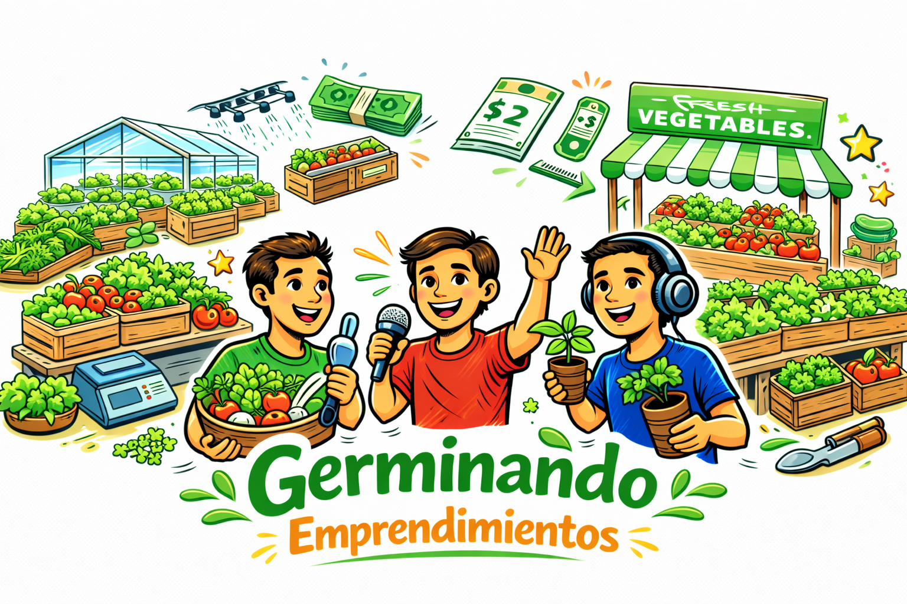
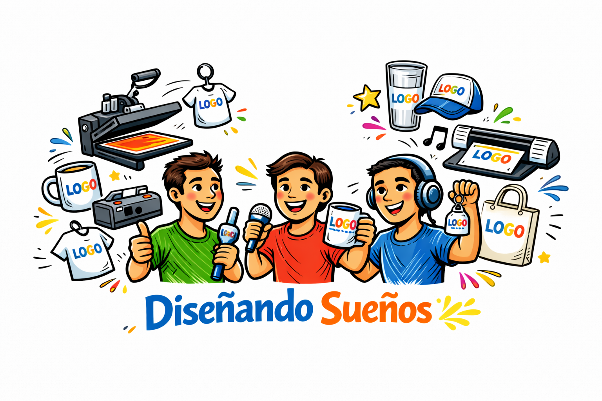

Germinando Emprendimientos
Producción de hortalizas sostenibles. Un espacio donde la paciencia y el cuidado se traducen en vida.
Conocer más sobre el proceso →

Somos un equipo juvenil trabajando bajo la convocatoria de Divulgación Digital de la fundación Kawsay Muju y el proyecto Jóvenes en Movimiento. Actualmente estamos trabajando con dos iniciativas juveniles del programa COMETA: Germinando Emprendimientos y Diseñando Sueños, visibilizando los procesos de reinserción y talento de los jóvenes.
Te presentamos los proyectos de vida en los que estamos trabajando para dar a conocer su impacto social.

Producción de hortalizas sostenibles. Un espacio donde la paciencia y el cuidado se traducen en vida.
Conocer más sobre el proceso →
Arte aplicado a productos personalizados. Creatividad digital que rompe barreras y crea oportunidades.
Conocer más sobre el proceso →Comprometida con el acompañamiento integral y la transformación social de los jóvenes.
Especialista en dinámicas familiares y procesos de reinserción comunitaria.
Encargada de capturar la esencia de cada proyecto a través de la narrativa visual.
Apasionado por la tecnología y su uso como herramienta de cambio positivo.
Para consultas o apoyo a la agrupación: